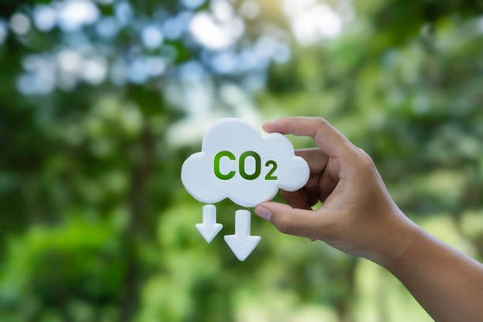

Emissão de CO₂ por peça
↑ Alto impacto63 kg
Meta: < 20 kgAtual: Alto
Simule, compare e reduza o impacto antes da produção do automóvel
A CIRCUMAT garante que decisões de engenharia não sejam tomadas no escuro — mostrando ao engenheiro em tempo real o impacto de cada material e qual é a melhor escolha antes da produção
Hoje, engenheiros de produto ainda tomam decisões críticas de materiais com foco em custo, performance e viabilidade, mas sem visibilidade clara do impacto ambiental durante o desenvolvimento.
Quando esse impacto é analisado via LCA ou estudos posteriores, já é tarde demais. Alterar materiais nessa fase significa mais custo, mais atraso e mais retrabalho.

A CIRCUMAT permite simular, comparar e otimizar materiais antes da produção, mostrando em tempo real o impacto em CO₂, peso, resistência, reuso e muito mais.
Selecione um componente e teste diferentes materiais como aço, alumínio, compósitos ou reciclados com análise imediata de impacto.
Compare cenários lado a lado e identifique qual material reduz emissões, peso e custo sem comprometer a performance.
Receba recomendações para reduzir CO₂ e aumentar a reciclabilidade, alinhando decisões de engenharia com metas de descarbonização.
Modelo recorrente para equipes de engenharia com acesso à plataforma de simulação e comparação de materiais.
Starter: $20–30/mês Pro: $50–80/mês
A CIRCUMAT se posiciona como a camada de decisão de materiais baseada em impacto ambiental, integrada ao fluxo de engenharia.
Compare materiais, reduza CO₂ e otimize desempenho — tudo em tempo real.
Substituir por aço reciclado pode reduzir emissões em até 77% sem perda estrutural relevante.
Compare CO₂, peso e reciclabilidade em tempo real antes da produção
| Material | Densidade | Resistência | Dureza | Maleabilidade | Condutividade | Permeabilidade |
|---|
Registro das simulações, comparações e impactos gerados.
| Data | Componente | Material Atual → Proposto | Redução de CO₂ | Redução de Peso | Status |
|---|---|---|---|---|---|
| 24 Out | Chassi frontal | Aço virgem → Aço reciclado | −4.2 kg | −1.1 kg | APLICADA |
| 24 Out | Painel interno | PP ABS → PP Reciclado | −1.8 kg | −0.4 kg | DESCARTADA |
| 23 Out | Suporte lateral | Alumínio → Alumínio reciclado | −0.8 kg | −0.2 kg | EM ANÁLISE |
| 22 Out | Estrutura base | Aço → Liga leve | −12.0 kg | −3.5 kg | APLICADA |
| 21 Out | Carcaça externa | PP Virgem → PP Reciclado | −5.4 kg | −1.2 kg | APLICADA |
| 20 Out | Suporte interno | Aço → Aço reciclado | −2.1 kg | −0.6 kg | APLICADA |